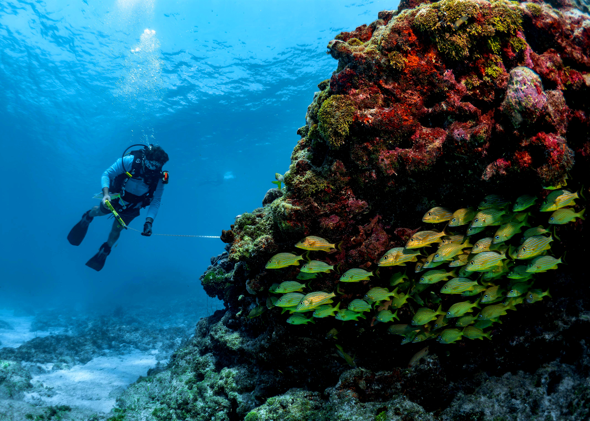
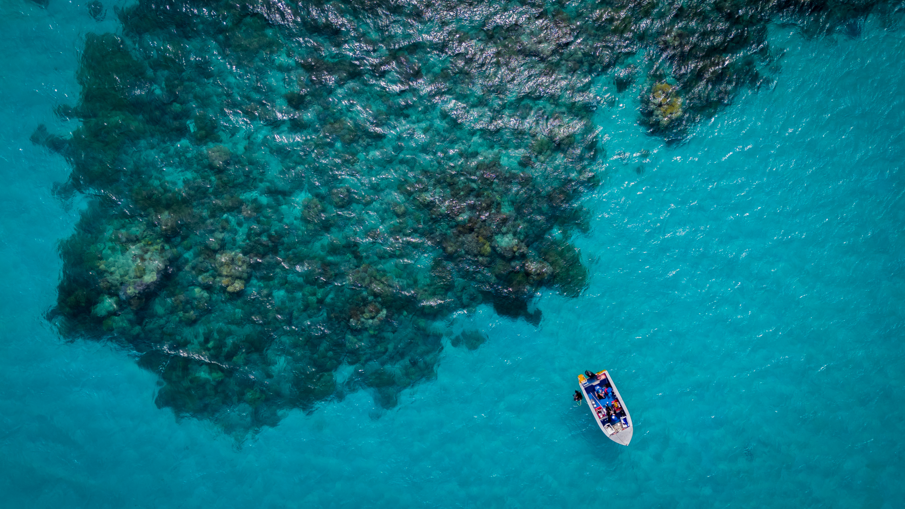

I’m Brandon Sosa — a marine ecologist and environmental economist. Currently, I am a PhD candidate working to better understand and optimize reef management. My research bridges ecological fieldwork, economic valuation, and dynamic modeling to support large-scale reef recovery, in the Florida Keys. I focus on the practical use of marine grazers like urchins and Caribbean king crabs to reduce algae and boost coral success.

About Me
I’m Brandon Sosa — a first-generation scientist born and raised in Hialeah, Florida (outskirts of Miami). Growing up in a dense urban environment, my connection to nature didn’t come from daily access, but from moments of immersion — camping with the Boy Scouts in the Everglades, participating in beach cleanups along the mangrove coastlines, and eventually diving into the world of marine science.


I began my undergraduate journey at Purdue University on a Wildlife pre-veterinary track, gaining experience in animal diagnostics and care. But a shift happened when I was awarded a Benjamin A. Gilman International Scholarship to study abroad at the University of Queensland. There, under the mentorship of Dr. Robert Mason in the Spatial Marine Ecology Lab, I contributed to a review on the ecological impacts of boat groundings and anchoring on coral reefs.
Research Highlight: I had the fortune of conducting small research projects in Australia at Heron Island in 2020 (Southern GBR) and Lizard Island in 2025 (Northern GBR)
What truly solidified my decision to pursue marine science was attending TalkFest, a UQ-hosted symposium that showcased a wide range of reef-focused research. The event revealed a vibrant and collaborative marine science community all working toward the protection and restoration of marine environments — and I knew I wanted to be a part of it.
Academic Journey
Back at Purdue, I worked as a research technician in the Höök Lab, where I assisted on a study examining how microplastics impact aquatic food webs — work that contributed to a published article on trophic transfer and behavioral effects in freshwater fish (see publication). Later, I led a meta-analysis examining the bioaccumulation and maternal transfer of toxicants (Hg and PCBs), and determine effect on offspring hatching, survival and growth (manuscript submitted, 09/2025 Fish and Fisheries).
Current Research at FIU

Today, I’m pursuing a Ph.D. in Natural Resource Management and Environmental Economics at Florida International University, blending ecological research with economic and social insight. I was mentored by Dr. Mark Butler, whose pioneering work in marine invertebrate ecology shaped my academic foundation. I am now co-advised by:
- Dr. Mahadev Bhat - Environmental economist focused on natural resource management
- Dr. Alastair Harborne - Coral reef ecologist specializing in fish-habitat interactions and reef resilience
My current research focuses on how marine grazers — like Caribbean King Crabs and long-spined sea urchins — can help reduce algae and enhance coral restoration success in the Florida Keys. I integrate field ecology, mariculture, ecological modeling, and social survey methods to understand which strategies work best, and how to communicate their value to the public and managers.
Beyond the Dissertation
Beyond my dissertation, I’ve collaborated with the Everglades Foundation to support a total ecosystem service valuation of the Greater Everglades system. This work has included the development of benefit-transfer approaches, organizing professional workshops, and identifying critical knowledge gaps in how we value wetlands, fisheries, water quality, and coastal resilience.
It’s been a rewarding opportunity to bridge ecological economics with large-scale restoration planning — and bring actionable insights to resource managers and policy discussions.
Personal Interests

Outside the field, I’m passionate about science communication, mentoring undergrads & new grad students, and creating tools that connect science with real-world decisions. Ask me about rock climbing, anime, hiking, snorkeling, SCUBA, or my pets.
“Growing up in Miami taught me that connecting with nature isn’t about constant access — it’s about pausing to respect it, admire its complexity, and let those moments spark passion.”